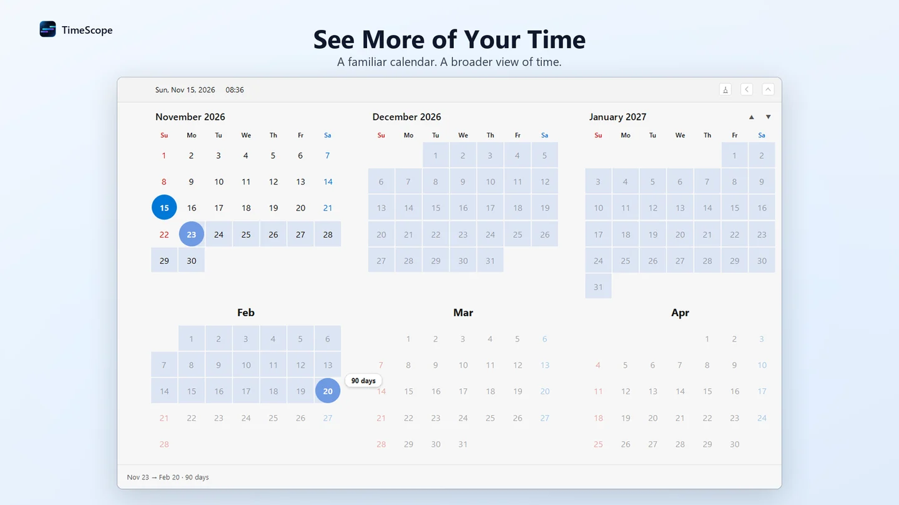
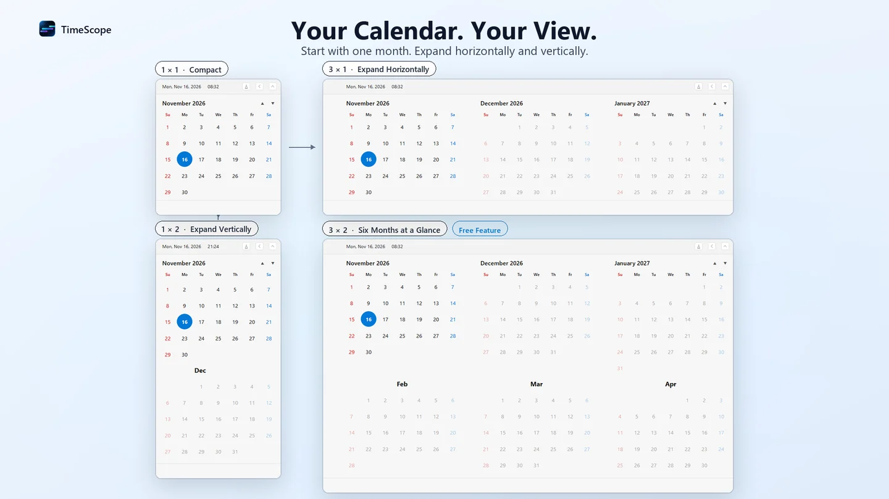
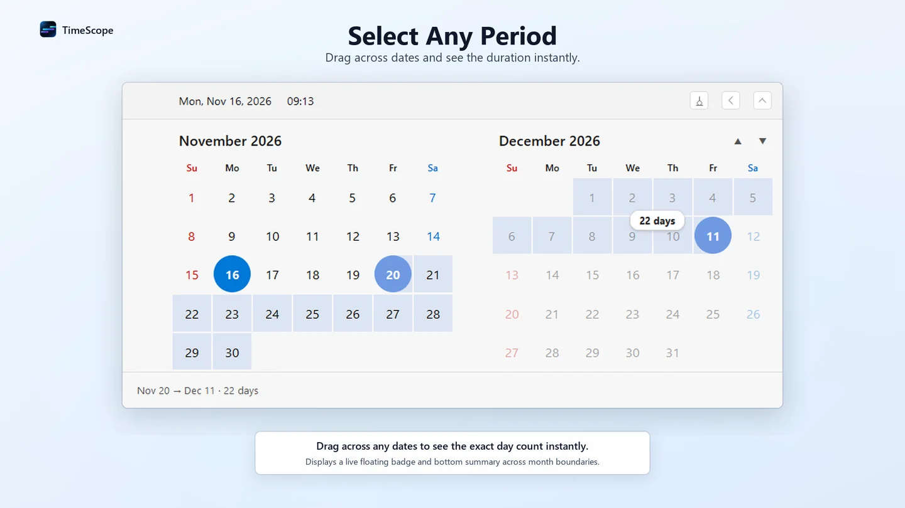
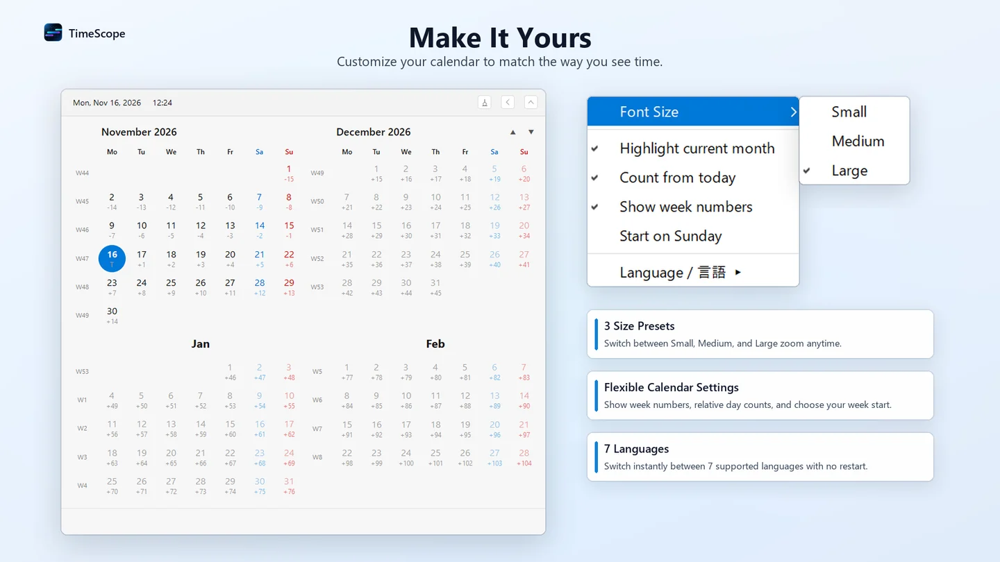
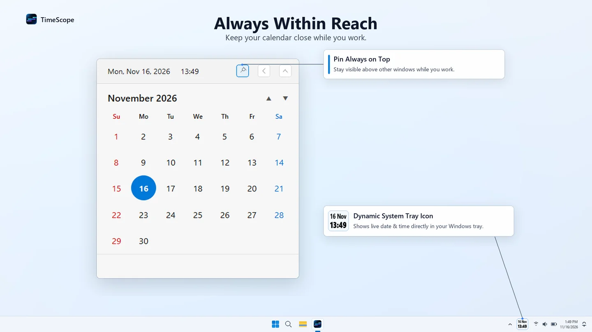

See more months at once
Start with a compact single-month calendar and expand horizontally or vertically using your available window and display space.
A lightweight Windows desktop calendar to view multiple months, select date ranges, and understand durations at a glance.

Built for fast date exploration, duration checking, and everyday desktop focus.
Start with a compact single-month calendar and expand horizontally or vertically using your available window and display space.
Drag across any dates to highlight a range and read the exact day count immediately in a floating badge and summary bar.
Unlock multi-band period comparison, multi-monitor display choice, and custom holidays & workdays as an optional one-time upgrade.
Every core calendar tool is included free, with zero scheduling clutter.
Expand your calendar horizontally and vertically to match your workspace—from a compact single month to broad multi-month views.

Check the length of a trip, sprint, or milestone between any two dates—even across month boundaries—without manual counting.

Tailor week start, visual indicators, and interface language directly from the menu with zero restarts.

Keep your calendar pinned above other windows while you work, and glance at today's date directly in the Windows system tray.

Start free with all core calendar features. Upgrade inside the app via Microsoft Store if you need Pro.
All core multi-month viewing, date-range selection, and desktop customization.
Optional one-time Microsoft Store in-app purchase unlocked inside TimeScope.
TimeScope Pro is a Durable one-time in-app add-on purchased inside the app through Microsoft Store ($4.99 USD base price; regional pricing and local taxes vary). No subscription required.
Genuine application screenshots showcasing both Free and TimeScope Pro capabilities.
Multi-month desktop calendar view displaying six months at once with a continuous 90-day range selection.
Download TimeScope – Visual Calendar free from Microsoft Store on Windows 10 and Windows 11 (x64).
Get it from Microsoft Store